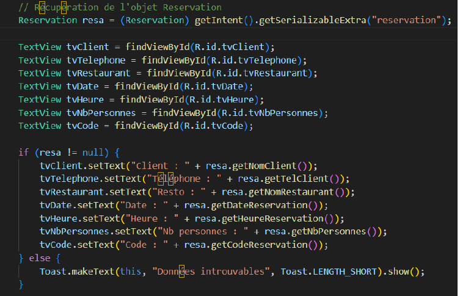
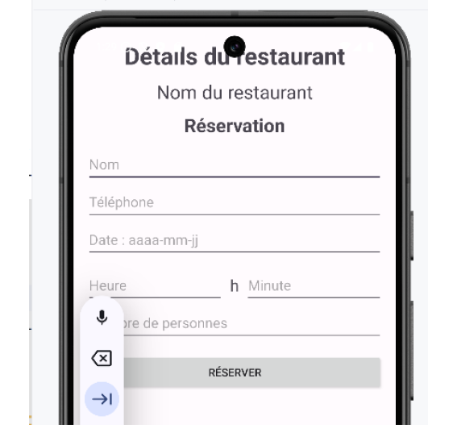

Ticket 10 – Logique : Création de la classe DetailReservationActivity
Dans le cadre du Projet 2 Android – Itération 3, j’ai développé le
Ticket 10 qui consiste à créer l’activité
DetailReservationActivity pour afficher le détail complet d’une réservation.
Branche utilisée : iteration3_ticket10.
Fonctionnalités principales
- Association du layout XML avec les éléments Java via setContentView() dans onCreate().
- Récupération de chaque champ visuel (TextView) via findViewById() : nom du client, téléphone, restaurant, date, heure, nombre de personnes et code de réservation.
- Récupération de l’objet Reservation transmis via Intent depuis l’activité précédente pour remplir les champs.
- Le bouton Retour ferme l’activité et revient à l’écran précédent.
- Cette activité est uniquement dédiée à la consultation : aucune modification n’est possible.
Écran correspondant
L’écran ci-dessous affiche toutes les informations d’une réservation confirmée, telles qu’elles sont enregistrées dans la base de données.

Et cela ramène à l’écran de détail de la réservation ci-dessous :
